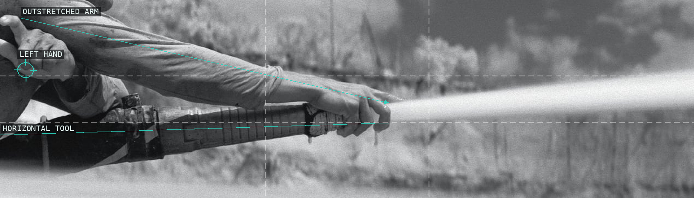
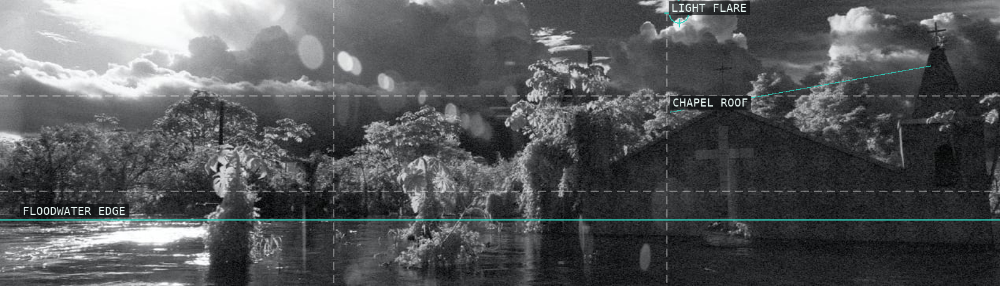
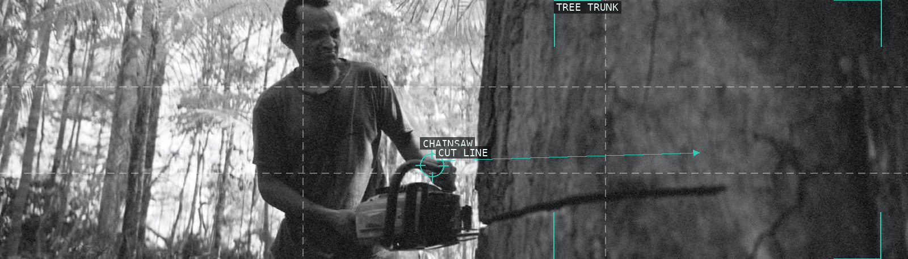
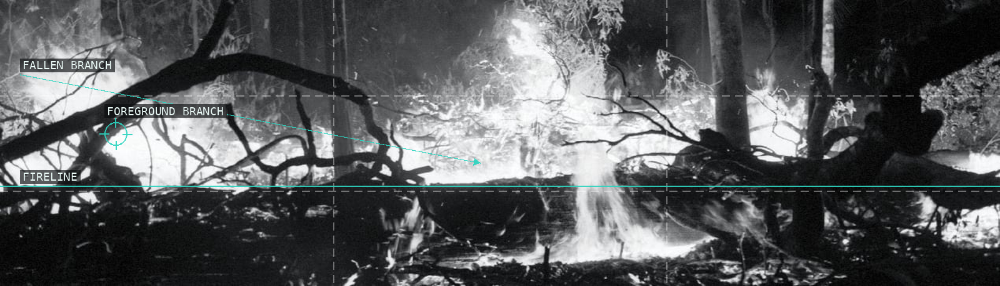
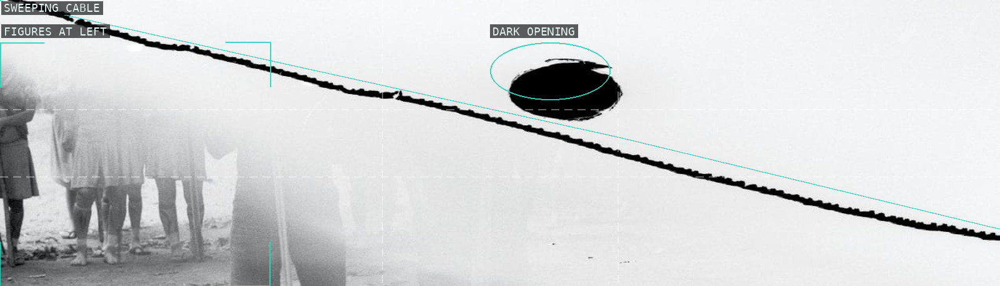
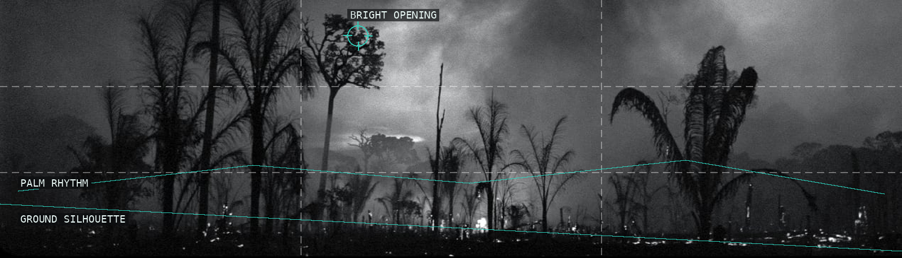
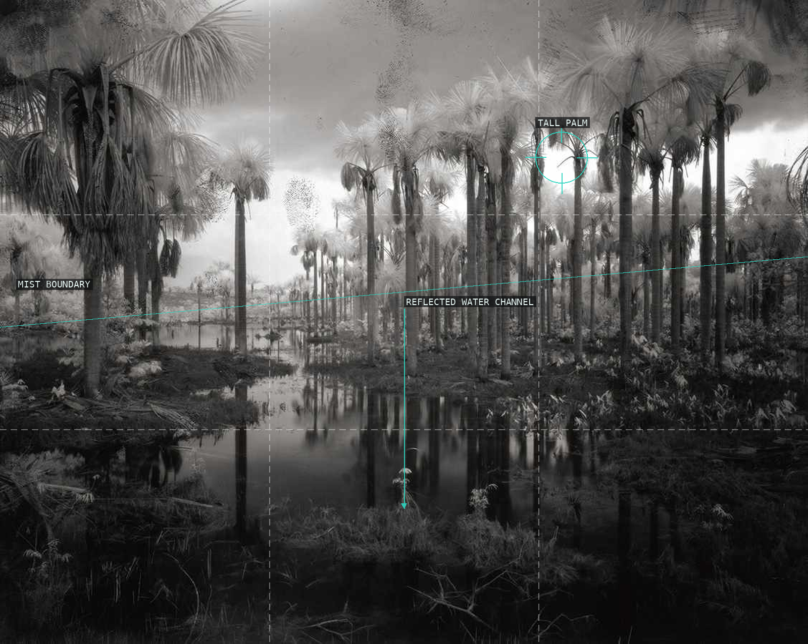
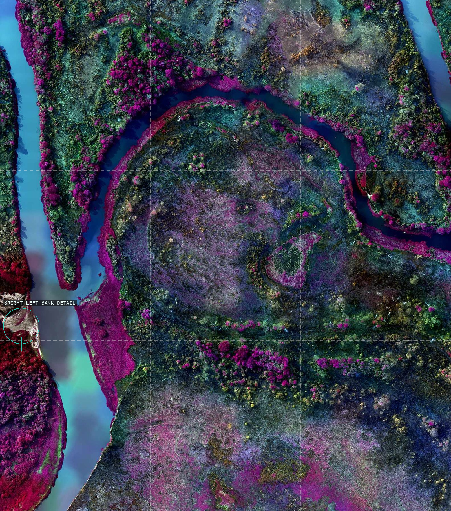
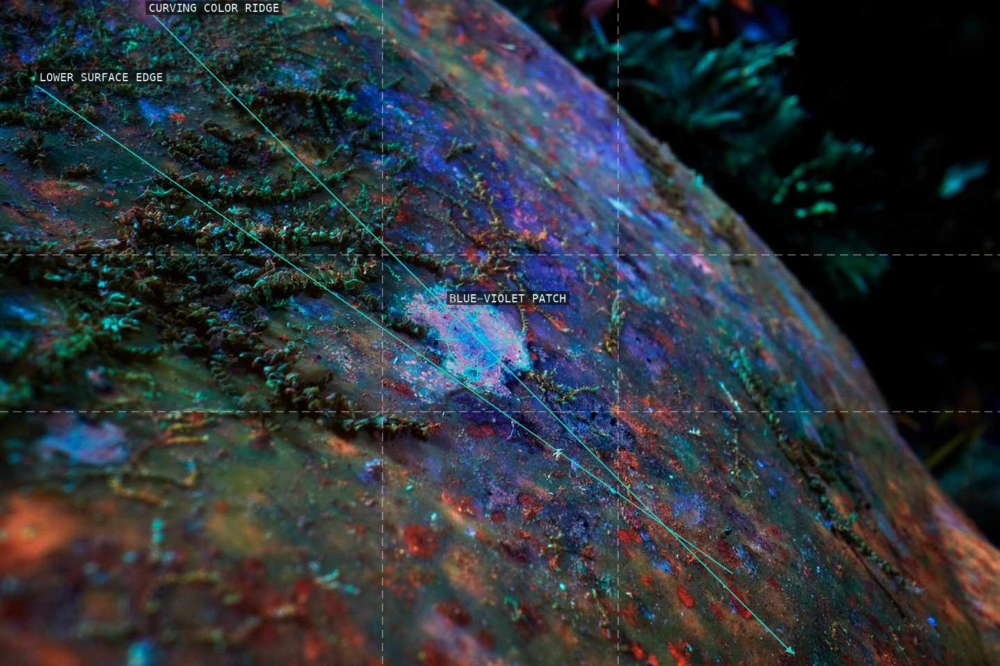
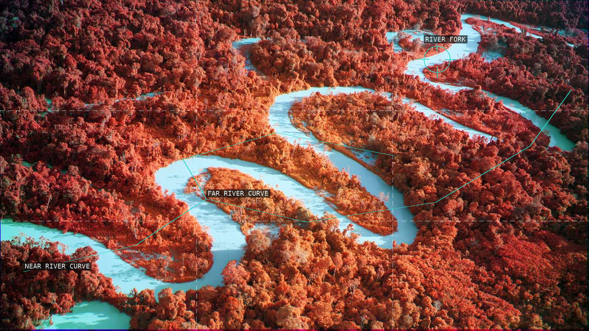

/* richard-mosse - proofs */
10 plates. Deterministic overlays rendered by the composition-analysis skill.

01 Arm and tool direct the strip.

02 Floodwater holds chapel and cloud.

03 Saw meets trunk.

04 Branch crosses fireline.

05 Cable divides the overexposed field.

06 Palm silhouette encloses light.

07 Repeated palms and water channel.

08 Conservative fallback grid and anchor.

09 Surface contours and colour patch.

10 False-colour river system.